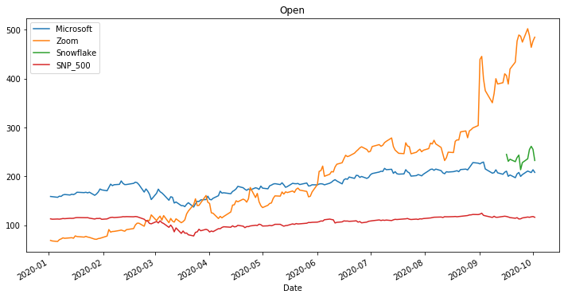
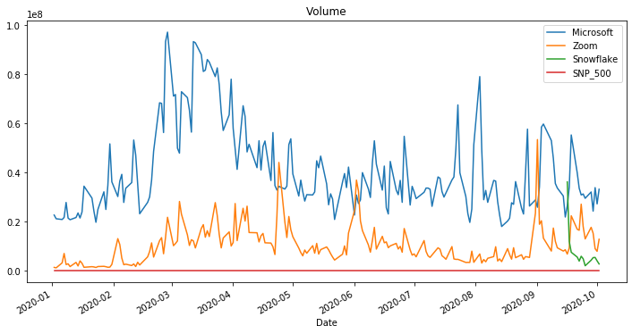
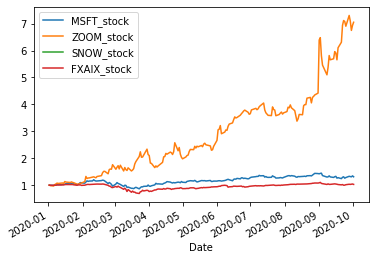
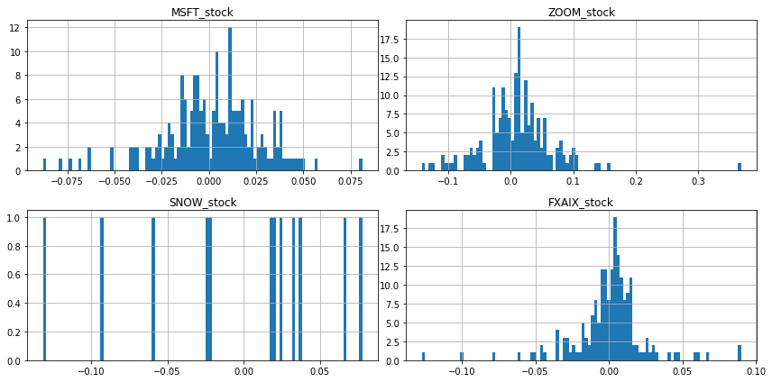
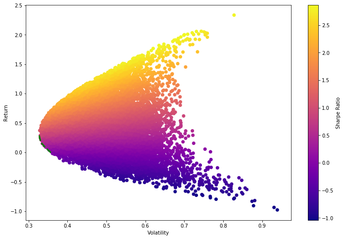
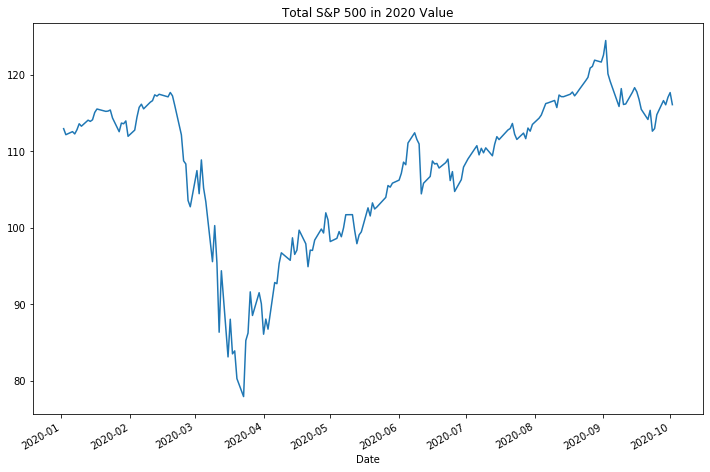

import pandas as pd
import numpy as np
import pandas_datareader.data as web
import datetime
import matplotlib.pyplot as plt
%matplotlib inlineThis post includes code adapted from python for finance and trading algorithms udemy course and python for finance and trading algorithms udemy course notebooks and the documentation here
# # start = datetime.datetime(2016, 1, 1)
# # end = datetime.datetime(2017, 5, 17)
# start = datetime.datetime(2010, 1, 1)
# end = datetime.datetime(2020, 1, 1)start = pd.to_datetime('2020-01-01')
end = pd.to_datetime('today')
FXAIX_stock = web.DataReader('FXAIX', 'yahoo', start, end)
FXAIX_stock.head()
MSFT_stock = web.DataReader('MSFT', 'yahoo', start, end)
MSFT_stock.head()
ZOOM_stock = web.DataReader('ZM', 'yahoo', start, end)
ZOOM_stock.head()
SNOW_stock = web.DataReader('SNOW', 'yahoo', start, end)
SNOW_stock.head()
fig = plt.figure(figsize=(12, 6))
plt.title('Open')
MSFT_stock['Open'].plot(label='Microsoft')
ZOOM_stock['Open'].plot(label='Zoom')
SNOW_stock['Open'].plot(label='Snowflake')
FXAIX_stock['Open'].plot(label='SNP_500')
plt.legend()
fig = plt.figure(figsize=(12, 6))
plt.title('Volume')
MSFT_stock['Volume'].plot(label='Microsoft')
ZOOM_stock['Volume'].plot(label='Zoom')
SNOW_stock['Volume'].plot(label='Snowflake')
FXAIX_stock['Volume'].plot(label='SNP_500')
plt.legend()<matplotlib.legend.Legend at 0x7fae549b8ba8>

FXAIX_stock = web.DataReader('FXAIX', 'yahoo', start, end)
FXAIX_stock.head()
MSFT_stock = web.DataReader('MSFT', 'yahoo', start, end)
MSFT_stock.head()
ZOOM_stock = web.DataReader('ZM', 'yahoo', start, end)
ZOOM_stock.head()
SNOW_stock = web.DataReader('SNOW', 'yahoo', start, end)
SNOW_stock.head()| High | Low | Open | Close | Volume | Adj Close | |
|---|---|---|---|---|---|---|
| Date | ||||||
| 2020-09-16 | 319.0 | 231.110001 | 245.000000 | 253.929993 | 36099700 | 253.929993 |
| 2020-09-17 | 241.5 | 215.240005 | 230.759995 | 227.539993 | 11907500 | 227.539993 |
| 2020-09-18 | 249.0 | 218.589996 | 235.000000 | 240.000000 | 7475400 | 240.000000 |
| 2020-09-21 | 241.5 | 218.600006 | 230.000000 | 228.850006 | 5524900 | 228.850006 |
| 2020-09-22 | 239.0 | 225.149994 | 238.500000 | 235.160004 | 3889100 | 235.160004 |
stocks = pd.concat([MSFT_stock['Open'], ZOOM_stock['Open'], SNOW_stock['Open'], FXAIX_stock['Open']],
axis = 1)stocks| Open | Open | Open | Open | |
|---|---|---|---|---|
| Date | ||||
| 2020-01-02 | 158.779999 | 68.800003 | NaN | 112.980003 |
| 2020-01-03 | 158.320007 | 67.620003 | NaN | 112.190002 |
| 2020-01-06 | 157.080002 | 66.629997 | NaN | 112.589996 |
| 2020-01-07 | 159.320007 | 70.290001 | NaN | 112.290001 |
| 2020-01-08 | 158.929993 | 71.809998 | NaN | 112.839996 |
| ... | ... | ... | ... | ... |
| 2020-09-28 | 210.880005 | 502.410004 | 235.929993 | 116.650002 |
| 2020-09-29 | 209.350006 | 488.130005 | 255.000000 | 116.099998 |
| 2020-09-30 | 207.729996 | 464.209991 | 261.500000 | 117.070000 |
| 2020-10-01 | 213.490005 | 477.000000 | 255.250000 | 117.699997 |
| 2020-10-02 | 208.000000 | 485.005005 | 232.440002 | 116.120003 |
191 rows × 4 columns
stocks.columns = ['MSFT_stock','ZOOM_stock','SNOW_stock','FXAIX_stock']stocks| MSFT_stock | ZOOM_stock | SNOW_stock | FXAIX_stock | |
|---|---|---|---|---|
| Date | ||||
| 2020-01-02 | 158.779999 | 68.800003 | NaN | 112.980003 |
| 2020-01-03 | 158.320007 | 67.620003 | NaN | 112.190002 |
| 2020-01-06 | 157.080002 | 66.629997 | NaN | 112.589996 |
| 2020-01-07 | 159.320007 | 70.290001 | NaN | 112.290001 |
| 2020-01-08 | 158.929993 | 71.809998 | NaN | 112.839996 |
| ... | ... | ... | ... | ... |
| 2020-09-28 | 210.880005 | 502.410004 | 235.929993 | 116.650002 |
| 2020-09-29 | 209.350006 | 488.130005 | 255.000000 | 116.099998 |
| 2020-09-30 | 207.729996 | 464.209991 | 261.500000 | 117.070000 |
| 2020-10-01 | 213.490005 | 477.000000 | 255.250000 | 117.699997 |
| 2020-10-02 | 208.000000 | 485.005005 | 232.440002 | 116.120003 |
191 rows × 4 columns
mean_daily_ret = stocks.pct_change(1).mean()
mean_daily_retMSFT_stock 0.001751
ZOOM_stock 0.011973
SNOW_stock -0.002546
FXAIX_stock 0.000440
dtype: float64stocks.pct_change(1).corr()| MSFT_stock | ZOOM_stock | SNOW_stock | FXAIX_stock | |
|---|---|---|---|---|
| MSFT_stock | 1.000000 | 0.209041 | 0.661827 | 0.382807 |
| ZOOM_stock | 0.209041 | 1.000000 | 0.095052 | 0.127526 |
| SNOW_stock | 0.661827 | 0.095052 | 1.000000 | 0.292117 |
| FXAIX_stock | 0.382807 | 0.127526 | 0.292117 | 1.000000 |
stock_normed = stocks/stocks.iloc[0]
stock_normed.plot()<matplotlib.axes._subplots.AxesSubplot at 0x7fae54a74a90>
stock_daily_ret = stocks.pct_change(1)
stock_daily_ret.head()| MSFT_stock | ZOOM_stock | SNOW_stock | FXAIX_stock | |
|---|---|---|---|---|
| Date | ||||
| 2020-01-02 | NaN | NaN | NaN | NaN |
| 2020-01-03 | -0.002897 | -0.017151 | NaN | -0.006992 |
| 2020-01-06 | -0.007832 | -0.014641 | NaN | 0.003565 |
| 2020-01-07 | 0.014260 | 0.054930 | NaN | -0.002664 |
| 2020-01-08 | -0.002448 | 0.021625 | NaN | 0.004898 |
log_ret = np.log(stocks / stocks.shift(1))
log_ret.head()| MSFT_stock | ZOOM_stock | SNOW_stock | FXAIX_stock | |
|---|---|---|---|---|
| Date | ||||
| 2020-01-02 | NaN | NaN | NaN | NaN |
| 2020-01-03 | -0.002901 | -0.017300 | NaN | -0.007017 |
| 2020-01-06 | -0.007863 | -0.014749 | NaN | 0.003559 |
| 2020-01-07 | 0.014160 | 0.053475 | NaN | -0.002668 |
| 2020-01-08 | -0.002451 | 0.021394 | NaN | 0.004886 |
log_ret.hist(bins = 100,
figsize = (12, 6));
plt.tight_layout()
log_ret.describe().transpose()| count | mean | std | min | 25% | 50% | 75% | max | |
|---|---|---|---|---|---|---|---|---|
| MSFT_stock | 190.0 | 0.001421 | 0.025752 | -0.087821 | -0.012115 | 0.004000 | 0.016980 | 0.081248 |
| ZOOM_stock | 190.0 | 0.010279 | 0.056461 | -0.142569 | -0.017014 | 0.011119 | 0.035968 | 0.368600 |
| SNOW_stock | 12.0 | -0.004386 | 0.063753 | -0.131433 | -0.033113 | 0.019477 | 0.034320 | 0.077728 |
| FXAIX_stock | 190.0 | 0.000144 | 0.024461 | -0.127150 | -0.007774 | 0.002806 | 0.010082 | 0.089894 |
log_ret.mean() * 252MSFT_stock 0.358130
ZOOM_stock 2.590236
SNOW_stock -1.105148
FXAIX_stock 0.036359
dtype: float64log_ret.cov()| MSFT_stock | ZOOM_stock | SNOW_stock | FXAIX_stock | |
|---|---|---|---|---|
| MSFT_stock | 0.000663 | 0.000323 | 0.001291 | 0.000245 |
| ZOOM_stock | 0.000323 | 0.003188 | 0.000290 | 0.000184 |
| SNOW_stock | 0.001291 | 0.000290 | 0.004064 | 0.000231 |
| FXAIX_stock | 0.000245 | 0.000184 | 0.000231 | 0.000598 |
# Set seed (optional)
np.random.seed(101)
# Stock Columns
print('Stocks')
print(stocks.columns)
print('\n')
# Create Random Weights
print('Creating Random Weights')
weights = np.array(np.random.random(4))
print(weights)
print('\n')
# Rebalance Weights
print('Rebalance to sum to 1.0')
weights = weights / np.sum(weights)
print(weights)
print('\n')
# Expected Return
print('Expected Portfolio Return')
exp_ret = np.sum(log_ret.mean() * weights) *252
print(exp_ret)
print('\n')
# Expected Variance
print('Expected Volatility')
exp_vol = np.sqrt(np.dot(weights.T, np.dot(log_ret.cov() * 252, weights)))
print(exp_vol)
print('\n')
# Sharpe Ratio
SR = exp_ret/exp_vol
print('Sharpe Ratio')
print(SR)Stocks
Index(['MSFT_stock', 'ZOOM_stock', 'SNOW_stock', 'FXAIX_stock'], dtype='object')
Creating Random Weights
[0.51639863 0.57066759 0.02847423 0.17152166]
Rebalance to sum to 1.0
[0.40122278 0.44338777 0.02212343 0.13326603]
Expected Portfolio Return
1.272564336318203
Expected Volatility
0.4864366288684257
Sharpe Ratio
2.6160948020680697num_ports = 15000
all_weights = np.zeros((num_ports, len(stocks.columns)))
ret_arr = np.zeros(num_ports)
vol_arr = np.zeros(num_ports)
sharpe_arr = np.zeros(num_ports)
for ind in range(num_ports):
# Create Random Weights
weights = np.array(np.random.random(4))
# Rebalance Weights
weights = weights / np.sum(weights)
# Save Weights
all_weights[ind,:] = weights
# Expected Return
ret_arr[ind] = np.sum((log_ret.mean() * weights) *252)
# Expected Variance
vol_arr[ind] = np.sqrt(np.dot(weights.T, np.dot(log_ret.cov() * 252, weights)))
# Sharpe Ratio
sharpe_arr[ind] = ret_arr[ind] / vol_arr[ind]sharpe_arr.max()2.8667995807841824sharpe_arr.argmax()5483all_weights[10619,:]array([5.06395348e-01, 4.67772019e-04, 2.64242193e-01, 2.28894687e-01])max_sr_ret = ret_arr[1419]
max_sr_vol = vol_arr[1419]plt.figure(figsize = (12, 8))
plt.scatter(vol_arr,
ret_arr,
c = sharpe_arr,
cmap = 'plasma')
plt.colorbar(label = 'Sharpe Ratio')
plt.xlabel('Volatility')
plt.ylabel('Return')
# Add red dot for max SR
plt.scatter(max_sr_vol,
max_sr_ret,
c = 'red',
s = 50,
edgecolors = 'black')<matplotlib.collections.PathCollection at 0x7fae54366048>def get_ret_vol_sr(weights):
"""
Takes in weights, returns array or return,volatility, sharpe ratio
"""
weights = np.array(weights)
ret = np.sum(log_ret.mean() * weights) * 252
vol = np.sqrt(np.dot(weights.T, np.dot(log_ret.cov() * 252, weights)))
sr = ret/vol
return np.array([ret, vol, sr])
from scipy.optimize import minimize
import numpy as np
def neg_sharpe(weights):
return get_ret_vol_sr(weights)[2] * -1
# Contraints
def check_sum(weights):
'''
Returns 0 if sum of weights is 1.0
'''
return np.sum(weights) - 1
# By convention of minimize function it should be a function that returns zero for conditions
cons = ({'type' : 'eq', 'fun': check_sum})
# 0-1 bounds for each weight
bounds = ((0, 1), (0, 1), (0, 1), (0, 1))
# Initial Guess (equal distribution)
init_guess = [0.25, 0.25, 0.25, 0.25]
# Sequential Least Squares
opt_results = minimize(neg_sharpe,
init_guess,
method = 'SLSQP',
bounds = bounds,
constraints = cons)
opt_results fun: -2.8998675936504807
jac: array([-3.57061625e-04, 6.75618649e-05, 1.98669076e+00, 1.90789163e-01])
message: 'Optimization terminated successfully.'
nfev: 42
nit: 7
njev: 7
status: 0
success: True
x: array([1.59222977e-01, 8.40777023e-01, 7.68699340e-16, 0.00000000e+00])opt_results.x
get_ret_vol_sr(opt_results.x)array([2.23483308, 0.77066728, 2.89986759])frontier_y = np.linspace(0, 0.3, 100)def minimize_volatility(weights):
return get_ret_vol_sr(weights)[1]
frontier_volatility = []
for possible_return in frontier_y:
# function for return
cons = ({'type':'eq','fun': check_sum},
{'type':'eq','fun': lambda w: get_ret_vol_sr(w)[0] - possible_return})
result = minimize(minimize_volatility,
init_guess,
method = 'SLSQP',
bounds = bounds,
constraints = cons)
frontier_volatility.append(result['fun'])plt.figure(figsize = (12, 8))
plt.scatter(vol_arr,
ret_arr,
c = sharpe_arr,
cmap = 'plasma')
plt.colorbar(label = 'Sharpe Ratio')
plt.xlabel('Volatility')
plt.ylabel('Return')
# Add frontier line
plt.plot(frontier_volatility,
frontier_y,
'g--',
linewidth = 3)
stocks['FXAIX_stock'].plot(figsize = (12, 8))
plt.title('Total S&P 500 in 2020 Value')Text(0.5, 1.0, 'Total S&P 500 in 2020 Value')
import sqlalchemy as db
from sqlalchemy import create_engine
import sqlite3
import pandas as pdstocks| MSFT_stock | ZOOM_stock | SNOW_stock | FXAIX_stock | |
|---|---|---|---|---|
| Date | ||||
| 2020-01-02 | 158.779999 | 68.800003 | NaN | 112.980003 |
| 2020-01-03 | 158.320007 | 67.620003 | NaN | 112.190002 |
| 2020-01-06 | 157.080002 | 66.629997 | NaN | 112.589996 |
| 2020-01-07 | 159.320007 | 70.290001 | NaN | 112.290001 |
| 2020-01-08 | 158.929993 | 71.809998 | NaN | 112.839996 |
| ... | ... | ... | ... | ... |
| 2020-09-28 | 210.880005 | 502.410004 | 235.929993 | 116.650002 |
| 2020-09-29 | 209.350006 | 488.130005 | 255.000000 | 116.099998 |
| 2020-09-30 | 207.729996 | 464.209991 | 261.500000 | 117.070000 |
| 2020-10-01 | 213.490005 | 477.000000 | 255.250000 | 117.699997 |
| 2020-10-02 | 208.000000 | 485.005005 | 232.440002 | 116.120003 |
191 rows × 4 columns
engine = db.create_engine('sqlite:///stocks.sqlite')connection = engine.connect()
metadata = db.MetaData()stocks.to_sql('stocks', con=engine, if_exists='append', index=True)engine.execute("SELECT * FROM stocks LIMIT 10").fetchall()[(158.77999877929688, 68.80000305175781, None, 112.9800033569336),
(158.32000732421875, 67.62000274658203, None, 112.19000244140625),
(157.0800018310547, 66.62999725341797, None, 112.58999633789062),
(159.32000732421875, 70.29000091552734, None, 112.29000091552734),
(158.92999267578125, 71.80999755859375, None, 112.83999633789062),
(161.83999633789062, 73.98999786376953, None, 113.62000274658203),
(162.82000732421875, 73.08000183105469, None, 113.30000305175781),
(161.75999450683594, 73.88999938964844, None, 114.08999633789062),
(163.38999938964844, 74.31999969482422, None, 113.93000030517578),
(162.6199951171875, 73.27999877929688, None, 114.13999938964844)]engine.execute("SELECT FXAIX_stock FROM stocks LIMIT 10").fetchall()[(112.9800033569336,),
(112.19000244140625,),
(112.58999633789062,),
(112.29000091552734,),
(112.83999633789062,),
(113.62000274658203,),
(113.30000305175781,),
(114.08999633789062,),
(113.93000030517578,),
(114.13999938964844,)]# df = pd.DataFrame({'name' : ['User 1', 'User 2', 'User 3']})
# df
# df.to_sql('users', con=engine)
# engine.execute("SELECT * FROM users").fetchall()